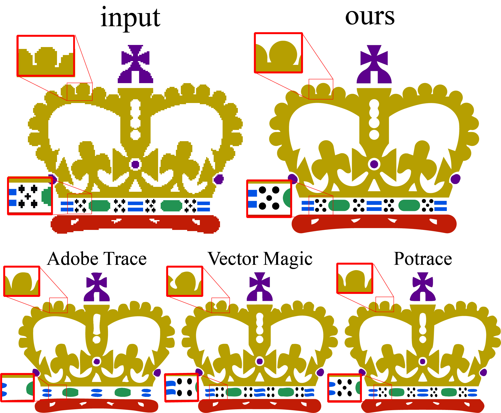

SIGGRAPH Papers by Taiwanese Researchers
SIGGRAPH is the most competitive conference in the computer graphics and interactive technology research field. Looking through the Taiwanese-authored SIGGRAPH papers could be one of the easiest ways to grasp what is going on in the Taiwanese computer graphics community. The goal of this page is to collect together all the SIGGRAPH papers that were written by Japanese researchers in a broad sense (e.g., including those who live overseas).
SIGGRAPH 2018
Differentiable Programming for Image Processing and Deep Learning in Halide
Tzu-Mao Li, Michaël Gharbi, Andrew Adams, Frédo Durand, Jonathan Ragan-Kelley[Paper] [Project]

Perception-Driven Semi-Structured Boundary Vectorization
Shayan Hoshyari, Edoardo A. Dominici, Alla Sheffer, Nathan Carr, Duygu Ceylan,Zhaowen Wang, I-Chao Shen
[Paper] [Project]

Towards Virtual Reality Infinite Walking: Dynamic Saccadic Redirection
Qi Sun, Anjul Patney, Li-Yi Wei, Omer Shapira, Jingwan Lu, Paul Asente, Suwen Zhu, Morgan McGuire, David Luebke, Arie Kaufman[Paper] [Project]
Physical Simulation of Environmentally Induced Thin Shell Deformation
Hsiao-yu Chen, Arnav Sastry, Wim M. van Rees, Etienne Vouga[Paper] [Project]
Toward Wave-based Sound Synthesis for Computer Animation
Jui-Hsien Wang, Ante Qu, Timothy R. Langlois, Doug L. James[Paper] [Project>]
Scale-Aware Black-and-White Abstraction of 3D Shapes
You-En Lin, Yongliang Yang, Hung-Kuo Chu[Paper] [Project]

Designing Patterns using Triangle-Quad Hybrid Meshes
Chi-Han Peng, Helmut Pottmann, Peter Wonka[Paper]
TOG 2018
Detailed Garment Recovery from a Single-View Image
Shan Yang, Tanya Ambert, Zherong Pan, Ke Wang, Licheng Yu, Tamara Berg, Ming C. Lin[Paper]